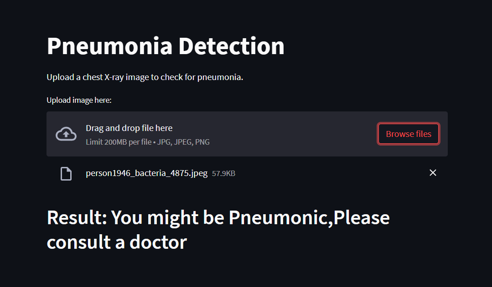
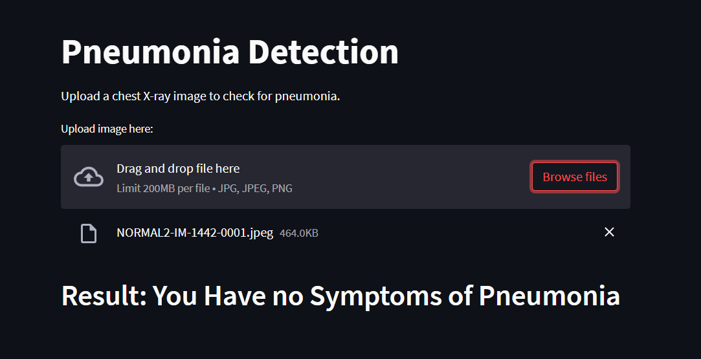

I'm Prasanna
a programmer
Here you will find information about my skills and experience.
About Me
Prasanna Kotyal
Welcome to my website! My name is Prasanna Kotyal and I am an Artificial Intelligence and Machine Learning Engineer. I am passionate about leveraging technology to create solutions that improve the human experience.
As an engineer, I am constantly seeking out new and innovative ways to improve upon existing technology. I stay up-to-date with the latest advancements in AI and machine learning to ensure that I am able to provide my clients with the best possible solutions.
In addition to my technical expertise, I have a keen eye for psychology. I understand that technology is not just about creating new tools and gadgets, but also about understanding how people interact with those tools. By combining my technical skills with my knowledge of human behavior, I am able to create solutions that truly meet the needs of users.
When I'm not working on technology, I love to engage in physical activities such as playing chess and football. Chess is a game that requires both strategy and patience, which I find to be a great way to exercise my mind. Football, on the other hand, is a game that requires teamwork and communication, which I find to be a great way to stay active and social.
Thank you for taking the time to visit my website. I look forward to working with you and creating solutions that make a difference in the world.
My Portfolio
Pneumonia Detection using Deep Learning
 Pneumonia is a life-threatening lung infection that affects millions of people worldwide, especially young children and the elderly. Early detection and treatment of pneumonia are critical to improving patient outcomes and reducing mortality rates. Deep learning, a subset of artificial intelligence, has shown promising results in the automatic detection of pneumonia from chest X-ray images. By training convolutional neural networks (CNNs) on large datasets of X-ray images, deep learning models can learn to identify patterns and features associated with pneumonia, such as opacities, infiltrates, and consolidations. These models can achieve high accuracy in detecting pneumonia and have the potential to improve diagnosis speed and efficiency, especially in resource-limited settings where expert radiologists may not be available. However, challenges such as dataset bias, class imbalance, and interpretability of model predictions must be addressed to ensure the reliability and generalizability of deep learning models for pneumonia detection.
Ethnicity Classification using CNN

Ethnicity classification is the task of identifying the ethnic origin or race of an individual based on their physical features, such as facial appearance, skin color, and hair texture. Convolutional neural networks (CNNs) have shown promising results in automatic ethnicity classification from facial images. By training CNNs on large datasets of labeled facial images, these models can learn to extract discriminative features that are specific to different ethnic groups. These features can include facial landmarks, texture, shape, and color information. However, the task of ethnicity classification is challenging due to the high intra-class variability and inter-class similarity of facial features within and across different ethnic groups. Moreover, ethical considerations related to privacy, bias, and discrimination must be taken into account when developing and deploying ethnicity classification models. Therefore, a careful evaluation of the accuracy, fairness, and transparency of CNN models for ethnicity classification is necessary to ensure that they are effective and socially responsible..